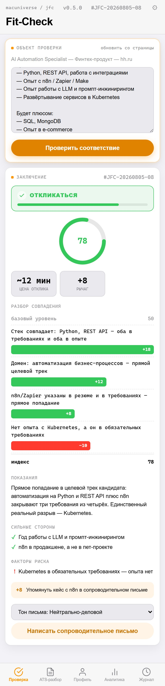
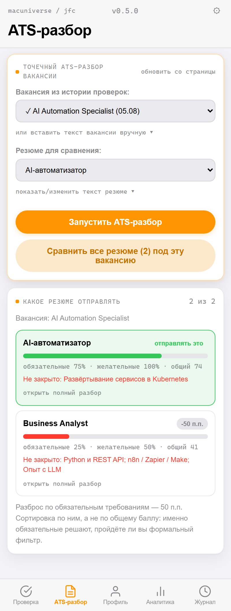
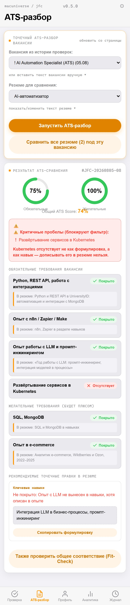
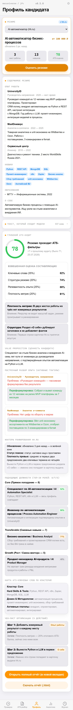

Расширение для Chrome · Manifest V3
ИИ, который отговаривает вас откликаться
Все остальные инструменты помогают разослать больше откликов. Этот считает, сколько вечеров вы потратите зря, — и чаще всего советует закрыть вкладку.
Бесплатно и без регистрации. Работает на бесплатном ключе NVIDIA NIM — свой ключ, свои данные, без нашего сервера посередине.
Бизнес-аналитик (Enterprise), hh.ru
ПРОПУСТИТЬ
Два обязательных требования не покрыты, и это не вопрос формулировок — такого опыта в резюме нет. Вдумчивый отклик занял бы ~25 минут. Потратьте их на другую вакансию.
Зачем
Отклик стоит не клика, а вечера
Откликнуться в один клик — бесплатно, и поэтому бесполезно: такие отклики отсеиваются первыми. Отклик, у которого есть шанс, — это перечитать вакансию, сопоставить её со своим опытом, переписать резюме под ключевые слова и написать нешаблонное письмо.
Двадцать пять минут. На тридцати вакансиях — двенадцать часов, и половина из них уходит на позиции, где вас отсеет фильтр по формальному требованию, которого у вас просто нет.
Job Fit Copilot тратит двадцать секунд, чтобы сказать, какие из тридцати не стоят вашего вечера, — и почему именно, со ссылкой на конкретную строчку вакансии и конкретный факт из резюме.
Четыре режима
Что он делает, пока вы читаете вакансию
Разбор по факторам
База 50 и дельты за каждый фактор совпадения — как в ведомости выше. Каждая строка обязана ссылаться на конкретный факт: годы, инструмент, домен, цифру. Общие слова вроде «хороший кандидат» промпт запрещает.
ATS-разбор под резюме
Делит требования на обязательные и желательные, проверяет смысловое покрытие: «Claude, промпт-инжиниринг» в резюме закрывает «опыт с LLM» в вакансии, даже если слова «LLM» там нет.
Глубокий ATS-аудит резюме
Взвешенный скоринг по четырём критериям, построчный разбор опыта с заменой «участвовал» на «спроектировал» и измеримый результат, топ-20 подходящих ролей и карта ключевых слов.
Сопроводительные письма
Собираются из сильных сторон, которые нашёл разбор. Список запрещённых клише зашит в промпт: «заинтересован в вашей вакансии» и «высококвалифицированный специалист» не появятся.
Интерфейс
Как это выглядит рядом с вакансией
Панель открывается сбоку от страницы, поэтому вакансия и разбор видны одновременно — переключаться между вкладками не нужно.
Разбор совпадения
Вердикт, цена отклика в минутах и ведомость факторов. Каждая строка ссылается на конкретный факт из вакансии и резюме.

Какое резюме отправлять
Одна вакансия против всех сохранённых версий резюме. Сортировка по обязательным требованиям — они решают, пройдёте ли вы фильтр.

ATS-разбор под резюме
Обязательные требования отдельно от желательных, со смысловым покрытием: «год работы с LLM» закрывает «опыт работы с LLM».

Аудит резюме
Взвешенная оценка по четырём критериям, построчные переформулировки опыта и чек-лист правок под ранжирование hh.ru.

Кадры сняты из настоящих файлов расширения командой npm run shots.
Заранее задан только ответ модели — живой запрос требует вашего ключа и
каждый раз возвращает другой текст.
Принцип
Он не дорисовывает вам опыт
Инструмент, который приукрашивает резюме, готовит вас к провалу на первом же техническом собеседовании.
Каждая правка проходит проверку на честность
У любой предложенной формулировки есть поле honesty_check:
модель обязана подтвердить, что правка опирается только на факты
из вашего резюме. Не может подтвердить — правка не предлагается вообще.
Разрыв называется разрывом
Если требования нет не на словах, а по сути, разбор говорит об этом прямо, вместо того чтобы предложить «переформулировать».
Модель настроена быть придирчивой
Дословно из системного промпта: «задача не подбодрить кандидата, а сэкономить его время, отсеяв нерелевантные вакансии».
Приватность
Резюме не уходит на наш сервер, потому что сервера нет
У проекта нет ни бэкенда, ни базы, ни аккаунтов, ни аналитики.
Ключи и резюме лежат в chrome.storage.local вашего
браузера. Запрос идёт напрямую от вас к провайдеру, чей ключ вы
вставили.
Это проверяется за минуту, а не принимается на веру: во всём расширении ровно один сетевой вызов.
background.js:104: await fetch(provider.endpoint, …)
# единственный. больше расширение никуда не ходит.
Расширение читает только ту страницу, которая уже открыта у вас во вкладке. Оно не листает вакансии в фоне, не обходит авторизацию и не отправляет отклики за вас — это осознанное ограничение, а не недоделка.
Модели
Свой ключ, любой из четырёх
Начать можно бесплатно: у NVIDIA NIM есть бесплатный тариф, которого хватает на ежедневный поиск.
| Модель | Провайдер | Ключ |
|---|---|---|
| DeepSeek V4 Flash | NVIDIA NIM | бесплатный тариф |
| GLM-5.2 | NVIDIA NIM | бесплатный тариф |
| GPT-4.1 | OpenAI | по тарифам OpenAI |
| Claude Sonnet 4.6 | Anthropic | по тарифам Anthropic |
Установка
Три минуты, без регистрации
Пока расширение ставится вручную как распакованное — так вы видите ровно тот код, который запускаете.
Скачайте и распакуйте релиз
Или клонируйте репозиторий, если привычнее.
Откройте chrome://extensions
Включите «Режим разработчика», затем «Загрузить распакованное расширение».
Вставьте API-ключ в настройках
Бесплатный ключ NVIDIA NIM берётся на build.nvidia.com за пару минут.
Откройте вакансию и запустите разбор
hh.ru, LinkedIn или Upwork — панель подхватит текст со страницы сама.